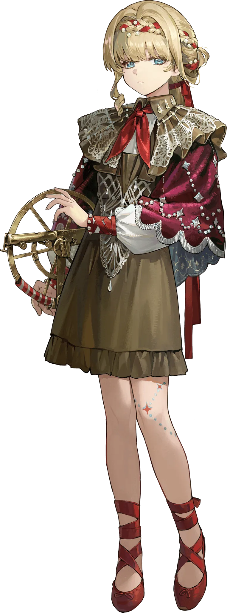

Kiperina
Circus performers and astronauts—two seemingly unrelated professions, but with one thing in common: the ability to defy gravity.
Some people use tightropes as a metaphor for life, but for Kiperina, life itself is the tightrope. Her time in the circus taught her to treat high places as level ground, pulling off breathtaking stunts to earn applause, and it taught her the importance of caution. That intense carefulness seeps into her everyday life. She triple-checks that the door is locked before leaving, makes sure her blanket covers her from head to toe when she sleeps ... To others, she simply seems more mature and reliable than her age suggests.
Circus performers and astronauts-two seemingly unrelated professions, but with one thing in common: the ability to defy gravity. In the vast universe, all things tangible scatter like dust. Only the belief in cherishing life holds her steady, like a thin rope tying her to existence. She regains her balance even in weightlessness, thanks to every grounded day spent walking the earth.
The doomsday is coming; the crisis is near! Kiperina truly believes this. She remembers every emergency exit, has gathered survival skills from all over, and never lets her guard down. She doesn't go around making doomsday predictions, but she never slacks on preparation. This ever-present sense of crisis makes her a bit forceful when caring for her friends, like a little girl meticulously arranging her dollhouse. She rarely allows herself downtime, and, perhaps, she's never really stopped to think-maybe what she's really afraid of isn't the end of the world.
view trailer